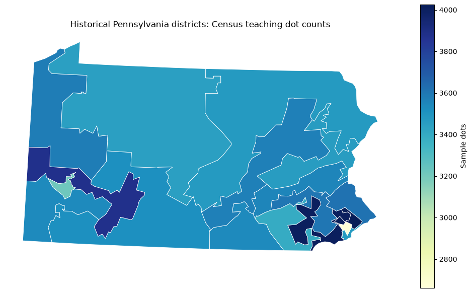

A database stores organized data and lets us ask questions without rewriting files by hand. A table has rows (records) and columns (attributes). A schema describes column names and types. A primary key uniquely identifies a record. A query selects or summarizes records; SQL is the language we use here.
File / tool
Main role in this lab
Parquet / GeoJSON
Downloadable source files
DuckDB .duckdb file
Persistent database with tables, views, and geometry
Python
Open connections, send SQL, inspect results, and plot
CSV / GeoJSON / PNG
Small exports we can publish on a static website
DuckDB runs inside Python and stores this database in one file. It is convenient for local analytical work. A shared application with many writers would normally use a server database instead. Its Spatial extension adds geometry types and spatial functions. DuckDB Python documentation · Spatial extension.
2. Reuse your Week 11 data and prepare Python
No new Census data download is needed. Use the same census_sample.parquet and districts_2015.geojson files from Week 11. Save this notebook and environment.yml in a new week12 folder next to your week11 folder:
Open the notebook from week12. DATA = Path("../week11/data/samples") below points to your existing files. If you used another folder name, edit that one path. The point file is the previous week’s systematically thinned synthetic 2010 Census dot extract; the polygons are historical 2015 congressional boundaries. We select Pennsylvania inside DuckDB. Counts are sample dots, not population estimates or current district demographics. Original data provenance.
Select Python (census-web). Quarto is installed separately for the next section. For an existing environment, use conda env update -n census-web -f environment.yml instead.
from pathlib import Pathimport duckdbimport pandas as pdimport geopandas as gpdimport matplotlib.pyplot as pltDATA = Path("../week11/data/samples")OUT = Path("outputs")OUT.mkdir(exist_ok=True)print("DuckDB:", duckdb.__version__)
DuckDB: 1.5.6
3. Create and connect to a database
connect() creates the file if it does not exist, or opens it if it does. :memory: would create a temporary database instead. This file stays local; the website will use small exports, not a live connection to this Python session.
INSTALL spatial downloads the extension the first time and needs internet access. LOAD spatial activates it in each new connection. If installation fails, check the network and use the DuckDB version in environment.yml. Extension documentation.
database_path = OUT /"census_tutorial.duckdb"con = duckdb.connect(str(database_path))con.execute("INSTALL spatial")con.execute("LOAD spatial")con.execute("SELECT 2 + 3 AS first_query").df()
first_query
0
5
4. Create tables and import source files
We will make two tables: census_points and districts. Their ID columns are primary keys. The next two cells rebuild these demonstration tables on rerun; use this tutorial database, not a shared database with other work.
First import Pennsylvania polygons, then keep only Census points they cover. A coarse coordinate filter reduces the first scan; the final ST_Covers test defines the selection precisely.
The point source uses EPSG:3857, and the boundary GeoJSON uses longitude/latitude, EPSG:4326. Transform both to EPSG:26918 (UTM zone 18N, meters) for local spatial operations. always_xy := true makes longitude/X the first axis. Do not measure distances directly in longitude/latitude degrees. A geometry column does not relieve us of tracking its CRS. Spatial functions.
con.execute(""" CREATE OR REPLACE TABLE districts ( district_id VARCHAR PRIMARY KEY, geom GEOMETRY )""")con.execute(""" INSERT INTO districts SELECT STATEFP || CD114FP AS district_id, ST_Transform(geom, 'EPSG:4326', 'EPSG:26918', always_xy := true) FROM ST_Read(?) WHERE STATEFP = '42'""", [str(DATA /"districts_2015.geojson")])con.execute("SHOW TABLES").df()
name
0
districts
con.execute(""" CREATE OR REPLACE TABLE census_points ( point_id INTEGER PRIMARY KEY, category VARCHAR, geom GEOMETRY )""")con.execute(""" INSERT INTO census_points WITH candidates AS ( SELECT easting AS x, northing AS y, race::VARCHAR AS category, ST_Transform(ST_Point(easting, northing), 'EPSG:3857', 'EPSG:26918', always_xy := true) AS geom FROM read_parquet(?) WHERE easting BETWEEN -9000000 AND -8200000 AND northing BETWEEN 4750000 AND 5300000 ) SELECT row_number() OVER (ORDER BY p.x, p.y, p.category), p.category, p.geom FROM candidates p WHERE EXISTS (SELECT 1 FROM districts d WHERE ST_Covers(d.geom, p.geom))""", [str(DATA /"census_sample.parquet")])con.execute("SELECT point_id, category, ST_AsText(geom) AS coordinates FROM census_points LIMIT 5").df()
point_id
category
coordinates
0
1
w
POINT (37508.231711089786 4580881.17369423)
1
2
w
POINT (37476.98586446396 4580105.704547788)
2
3
w
POINT (31695.953387025045 4488475.852722617)
3
4
w
POINT (35015.90324350167 4541065.591734792)
4
5
w
POINT (37381.941080673656 4578292.468608493)
Inspect the schema and data quality
Check counts, unique IDs, empty or invalid geometry, and categories before analysis. df() returns the small query result as a pandas DataFrame; it need not load the whole source table.
display(con.execute("DESCRIBE census_points").df())display(con.execute(""" SELECT count(*) AS sample_dots, count(DISTINCT point_id) AS unique_ids, count(*) FILTER (WHERE geom IS NULL OR ST_IsEmpty(geom)) AS missing_geometry FROM census_points""").df())con.execute("SELECT count(*) AS districts, bool_and(ST_IsValid(geom)) AS all_valid FROM districts").df()
column_name
column_type
null
key
default
extra
0
point_id
INTEGER
NO
PRI
None
None
1
category
VARCHAR
YES
None
None
None
2
geom
GEOMETRY
YES
None
None
None
sample_dots
unique_ids
missing_geometry
0
63552
63552
0
districts
all_valid
0
18
True
5. Select, filter, sort, and summarize with SQL
SELECT chooses columns; WHERE filters rows; GROUP BY forms groups; ORDER BY sorts; LIMIT keeps a small result. ? is a parameter placeholder: pass Python values separately instead of inserting user text into SQL strings.
category ="b"con.execute(""" SELECT point_id, category FROM census_points WHERE category = ? ORDER BY point_id LIMIT 5""", [category]).df()
point_id
category
0
23
b
1
34
b
2
36
b
3
38
b
4
50
b
con.execute(""" CREATE OR REPLACE VIEW category_summary AS SELECT category, count(*) AS sample_dots, round(100.0 * count(*) / (SELECT count(*) FROM census_points), 2) AS sample_percent FROM census_points GROUP BY category""")category_counts = con.execute("SELECT * FROM category_summary ORDER BY sample_dots DESC").df()category_counts
category
sample_dots
sample_percent
0
w
50564
79.56
1
b
6653
10.47
2
h
3629
5.71
3
a
1683
2.65
4
o
1023
1.61
A view stores a query definition rather than another copy of the result. Here it updates automatically when the underlying teaching table changes.
Visualize the query result
Use a bar chart for counts. The source categories are White (w), Black (b), Asian (a), Hispanic (h), and Other (o). They are source-specific historical categories, not an exhaustive description of identity.
6. Ask a spatial question: which district contains a location?
A spatial predicate compares geometries. ST_Covers(polygon, point) includes a polygon boundary; ST_Contains excludes boundary-only points. Transform the test point from longitude/latitude into the same CRS as the districts. This example uses Philadelphia City Hall.
longitude, latitude =-75.1636, 39.9526con.execute(""" WITH location AS ( SELECT ST_Transform(ST_Point(?, ?), 'EPSG:4326', 'EPSG:26918', always_xy := true) AS geom ) SELECT d.district_id FROM districts d, location p WHERE ST_Covers(d.geom, p.geom)""", [longitude, latitude]).df()
district_id
0
4201
Find sample dots within 2 km
ST_DWithin() uses the units of our projected CRS: meters. It counts points from the extract, not people actually living within the circle. Change radius_m and compare the result.
radius_m =2000nearby_counts = con.execute(""" WITH location AS ( SELECT ST_Transform(ST_Point(?, ?), 'EPSG:4326', 'EPSG:26918', always_xy := true) AS geom ) SELECT p.category, count(*) AS sample_dots FROM census_points p, location c WHERE ST_DWithin(p.geom, c.geom, ?) GROUP BY p.category ORDER BY sample_dots DESC""", [longitude, latitude, radius_m]).df()nearby_counts
category
sample_dots
0
w
341
1
b
94
2
a
57
3
h
32
4
o
8
7. Spatial join: summarize dots by district
A spatial join matches rows by location instead of an ID. Points on a shared boundary could match more than one polygon. We assign those points once, to the smallest matching district ID, so our totals do not double count. This is a reproducible teaching rule, not a demographic allocation method.
con.execute(""" CREATE OR REPLACE VIEW point_district AS SELECT p.point_id, min(d.district_id) AS district_id FROM census_points p JOIN districts d ON ST_Covers(d.geom, p.geom) GROUP BY p.point_id""")con.execute(""" CREATE OR REPLACE VIEW district_summary AS SELECT d.district_id, count(a.point_id) AS sample_dots FROM districts d LEFT JOIN point_district a ON d.district_id = a.district_id GROUP BY d.district_id""")district_counts = con.execute("SELECT * FROM district_summary ORDER BY district_id").df()district_counts
district_id
sample_dots
0
4201
3466
1
4202
2661
2
4203
3581
3
4204
3539
4
4205
3448
5
4206
3599
6
4207
4008
7
4208
3617
8
4209
3518
9
4210
3473
10
4211
3568
11
4212
3879
12
4213
4025
13
4214
3218
14
4215
3556
15
4216
3395
16
4217
3463
17
4218
3538
point_count = con.execute("SELECT count(*) FROM census_points").fetchone()[0]assigned_count = con.execute("SELECT count(*) FROM point_district").fetchone()[0]assert point_count == assigned_count ==int(district_counts["sample_dots"].sum())print(f"All {point_count:,} sample dots assigned once across {len(district_counts)} districts.")
All 63,552 sample dots assigned once across 18 districts.
What about spatial indexes?
An R-tree index can help some supported spatial filters on larger data. This small example does not need one, and not every query uses the index. Use EXPLAIN and measure performance before claiming a speedup. DuckDB spatial indexes.
con.execute("CREATE INDEX IF NOT EXISTS district_geom_idx ON districts USING RTREE (geom)")print("Created an optional R-tree index on district geometry.")
Created an optional R-tree index on district geometry.
8. Map the analysis result
Return geometry as WKB (well-known binary) to create a GeoDataFrame. Tell GeoPandas the actual CRS; assigning a CRS does not transform coordinates. The map colors are counts of sample dots, not density or current population.
map_table = con.execute(""" SELECT d.district_id, s.sample_dots, ST_AsWKB(d.geom) AS geometry_wkb FROM districts d JOIN district_summary s USING (district_id) ORDER BY district_id""").df()geometry = gpd.GeoSeries.from_wkb(map_table.pop("geometry_wkb").map(bytes), crs="EPSG:26918")district_map = gpd.GeoDataFrame(map_table, geometry=geometry)fig, ax = plt.subplots(figsize=(10, 6))district_map.plot(column="sample_dots", cmap="YlGnBu", edgecolor="white", linewidth=0.6, legend=True, legend_kwds={"label": "Sample dots"}, ax=ax)ax.set(title="Historical Pennsylvania districts: Census teaching dot counts")ax.set_axis_off()fig.tight_layout()fig.savefig(OUT /"district_sample_map.png", dpi=160)plt.show()

9. Export small files for the website
Static websites can show exported tables, charts, and GeoJSON without starting Python or opening the DuckDB database. CSV keeps IDs as text only if the reader preserves them. GeoJSON is exported in longitude/latitude for web mapping.
Closing the connection does not delete the database file. Reopen in read-only mode to check persistence. Load Spatial again before working with geometries. Close connections before sharing the file; this is not a web server.